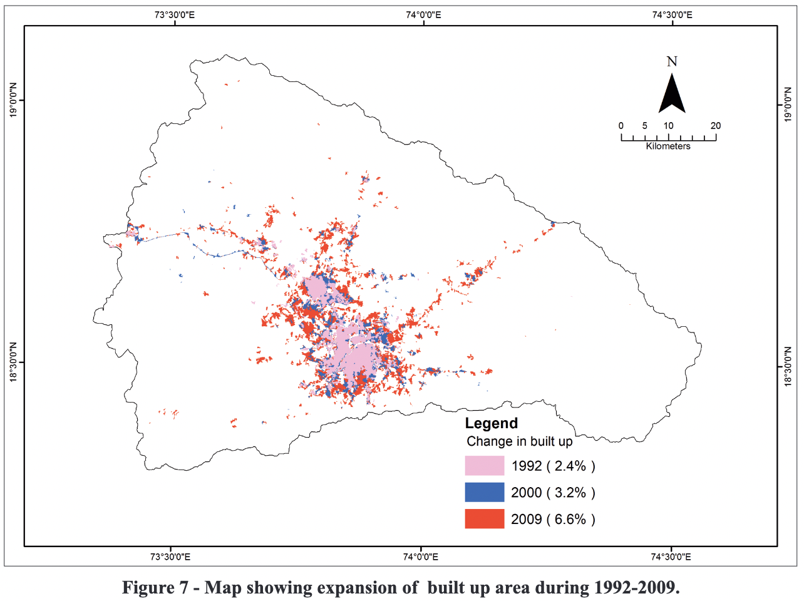
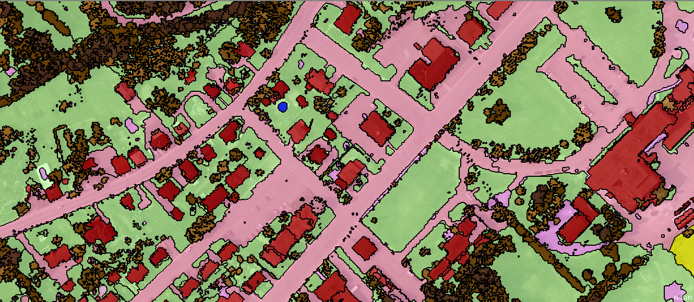
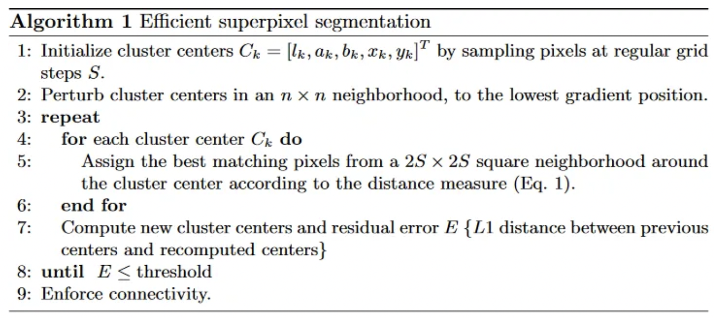
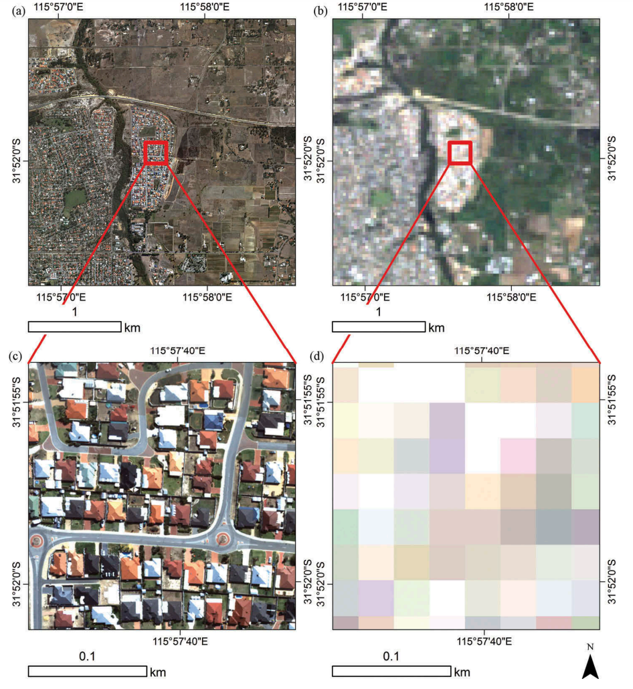
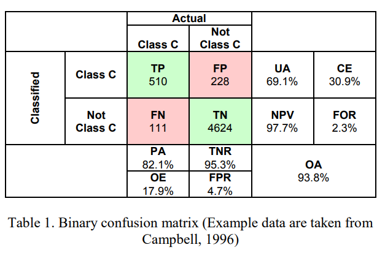
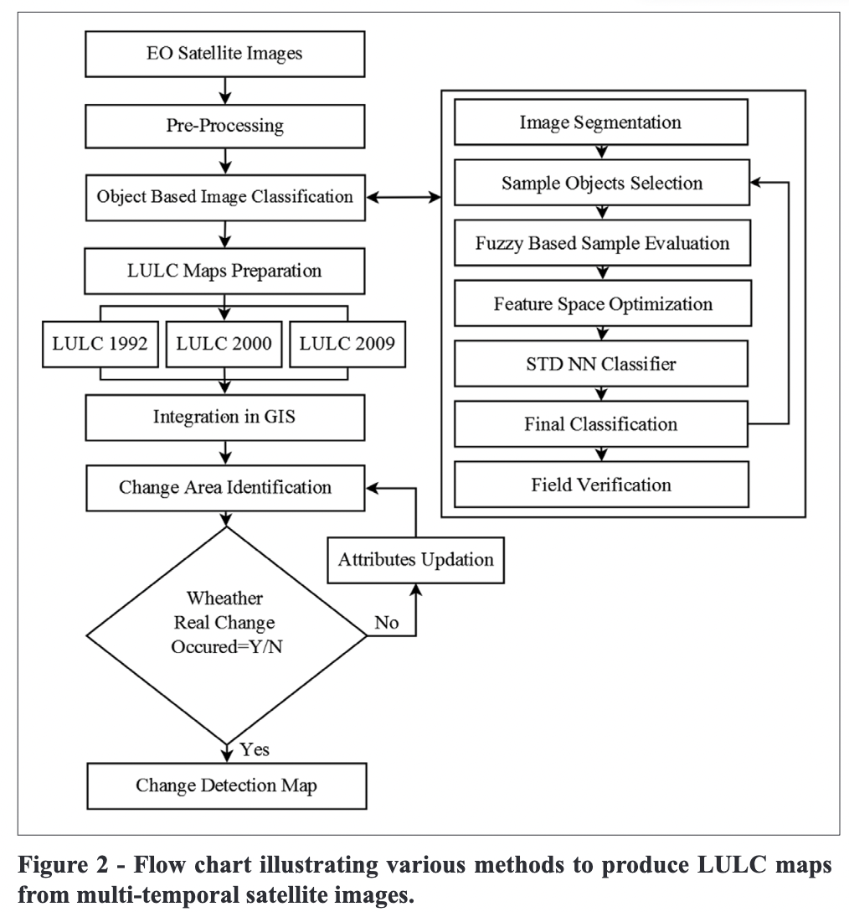

7 Classification II
7.1 Summary
In this week, we are going to look at segmentation and classification tasks in remote sensing which are object based image analysis and sub pixel analysis. Moreover, all the accuracy assessments will be reviewed.
7.1.1 Object based image analysis (OBIA)

Source: GISGeography
Overview: Object-Based Image Analysis (OBIA) is an approach to classify groups of pixels or image objects that share similar characteristics, such as spectral, spatial, or textural properties. The main tasks in OBIA consist of segmentation and classification.
Things to consider: In order to grouping pixels into superpixels, we consider based on the similarity (homogeneity) or difference (heterogeneity) of the cells.
Pros: It better representation of complex spatial patterns, and the ability to incorporate contextual information. Moreover, an classification accuracy may be increased in compared with performing pixel-based classification.
Cons: It can also be computationally intensive and may require more complex algorithms and expert knowledge to achieve optimal results
Segmentation Algorithms:
- Simple Linear Iterative Clustering (SLIC) Algorithm (Achanta et al. 2010)
- It is mainly used for superpixel segmentation by clustering pixels based on two considerations which are
- homogenity of colours: color similarity
- closeness to centre: spatial distance from point to centre of pixel
- The algorithm is summarised as follow: 
- It is mainly used for superpixel segmentation by clustering pixels based on two considerations which are
- Simple Linear Iterative Clustering (SLIC) Algorithm (Achanta et al. 2010)
Source: Achanta et al. 2010
7.1.2 Sub pixel analysis

Source: MacLachlan et al. 2017
Overview: Sub pixel analysis or spectral mixture analysis (SMA) is used to analyze and interpret the spectral signatures of mixed pixels in multispectral for dealing with images that have lower resolution than the features of interest on the ground. Since a single pixel may contain more than one type of land cover, object, or feature; the amount of sub-pixels for each class is calculated, before they are spatially allocated. SMA aims to estimate the abundance or proportion of each component (endmembers).
Things to consider:
- Pixel purity : Consider if a pixel contains a single land cover type or material or mixed signatures
- Number of Endmembers: the number of endmembers should represent the actual number of distinct land cover types or materials in the study area. Too few endmembers may lead to under-representation of the true composition of mixed pixels, while too many endmembers can result in overfitting and increased complexity. In urban areas, the Vegetation-Impervious surface-Soil (V-I-S) model is usually used.
Pros: Sub pixel analysis can improve the classification accuracy, especially for low-resolution or noisy images. It also may enhance the detection of subtle changes in land cover or other features over time, which may not be noticeable at the native image resolution.
Cons: Sub-pixel analysis relies on the assumption that the spectral signature of a mixed pixel is a linear combination of the spectral signatures of its constituent components. This assumption may not always hold, as interactions between materials and land cover types can cause non-linear spectral mixing, which can complicate the analysis and lead to inaccuracies. Moreover, the accuracy of sub-pixel analysis is heavily dependent on the quality and representativeness of the endmembers.
Spectral mixture analysis steps:
- Select endmembers
- estimate abundance of each endmember within the mixed pixels by solving a linear system of equations
The outputs will be the fraction of each class within one pixel.
7.1.3 Accuracy Assessment
There are many metrics to evaluate the performance of the classification models.

Source: Barsi et al. 2018
Some of the most widely used metrics include:
| Metrics | Formula | Definition |
|---|---|---|
| Producer’s accuracy (PA) | \[PA= \frac{TP}{TP+FN}\] | It is the same as recall or true positive rate or sensitivity. It refers to the number of correctly classified pixels for a given class divided by the total number of reference pixels for that class |
| User’s Accuracy (UA) | \[PA= \frac{TP}{TP+FP}\] | It is the same as precision or positive predictive value. It refers to the number of correctly classified pixels for a given class divided by the total number of classified pixels for that class |
| The overall accuracy (OA) | \[PA= \frac{TP+TN}{TP+FP+FN+TN}\] | The number of correctly classified pixels divide by the total number of pixels |
| Kappa Coefficient | \[\kappa = \frac{P_o - P_e}{1 - P_e}\] | It expresses the accuracy of an image compared to the results by chance. It ranges from 0 to 1. Note that po is the proportion of cases correctly classified (accuracy) and Pe expected cases correctly classified by chance. |
| F1-Score | \[F1 = \frac{2*Precision*Recall}{Precision+Recall}\] | The F1-Score (or F Measure) combines both recall (Producer accuracy) and Precision (User accuracy) |
7.2 Applications
In this section, we will give examples of object based image analysis projects in remote sensing with an analysis.
- Monitoring land use changes associated with urbanization: An object based image analysis approach (Samal and Gedam 2015)

Summary: This study aims to monitor land use/land cover (LULC) changes due to urbanization in a rapidly changing river basin in India. The researchers analyzed past changes and predicted possible consequences within the river basin’s natural boundaries. Multi-temporal images from Landsat and Indian Remote Sensing (IRS) satellites from 1992 to 2009, as well as a digital elevation model, were used to generate historical and current LULC patterns in the basin. The object-based image analysis technique was employed for precise classification of multi-temporal images, followed by GIS-based change detection studies. The results show that the built-up area increased significantly, adding 288 km² between 1992 and 2009. This increase in built-up area is attributed to a decrease in wastelands and agricultural land. This research also achieved an overall accuracy of 92.7% and kappa index of agreement of 0.91, while they got the producer accuracy of 90% except forest class.
Methodology: The researcher used an object-based image classification to classify land use by using K-nearest-neighbour into 5 classes; which are agricultural land, built up area, forest cover, wastelands and water bodies, and identified changes from 1992 to 2009. Image segmentation was performed to divides large heterogeneous image into a finite number of homogenous groups before classifying based on their different spectral and textural characteristics, including red, NIR, green and NDVI bands. Metrics used in this research were an overall accuracy, kappa index and producer’s accuracy
Comments: OBIA is an appropriate method to use in this project since it could help to capture the spatial extent of classes like forests or water bodies and then result in improvement of classification performance. The class that got the lowest accuracy was forest, since the models were confused with wetland and agriculture area. Further improvement of this research may include applying more complex models, such as object-based convolutional neural networks (OCNN) (Zhang et al. 2018). There are many researches that found that deep learning models outperform traditional machine learning models like K-NN in classification tasks.
7.3 Reflection
Content: I am very interesting to study the content of this week, since some of my previous work was to conduct crop classification task using random forest. However, I found the issue that the model did not classify the same class for every pixels in the field. I think that object based image analysis would solve this issue. However, I tried applying SNIC algorithm and found that it was not correctly segmented every fields. It is possible that data used in my research was a low-resolution imagery and it was hard to conduct perfect segmentation. Nevertheless, the outcome was better than pixel-based classification.
Applications: Land use changes is the other interesting topics that I would like to research more, since I had never conducted this research. The accuracy of this research is also very high (90%), so it means that it is possible that our research about this topic will be succeeded. Moreover, I would like to know more about what kind of complex urban land use which complex model such as object-based CNN (OCNN) can perform much better than other common used models e.g. random forest. It could be one of my list of future researches.